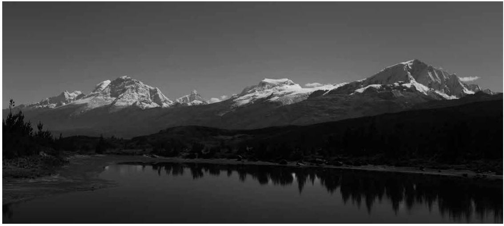
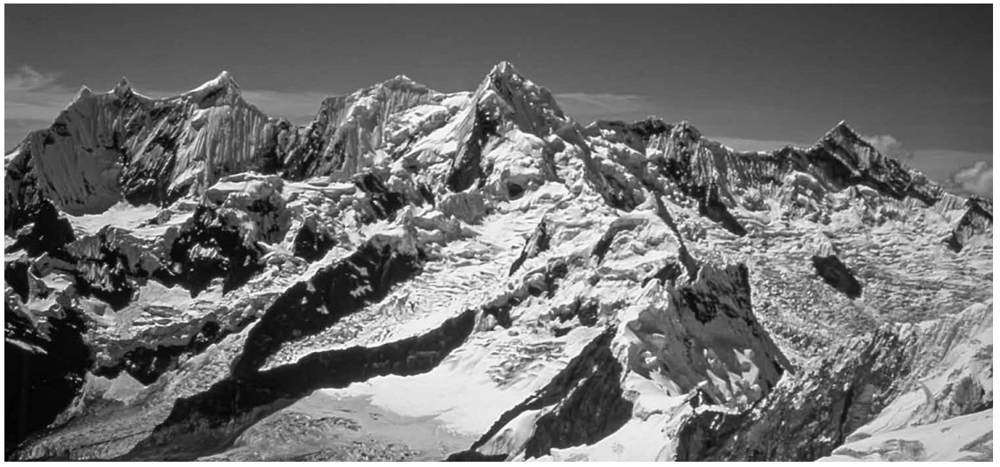
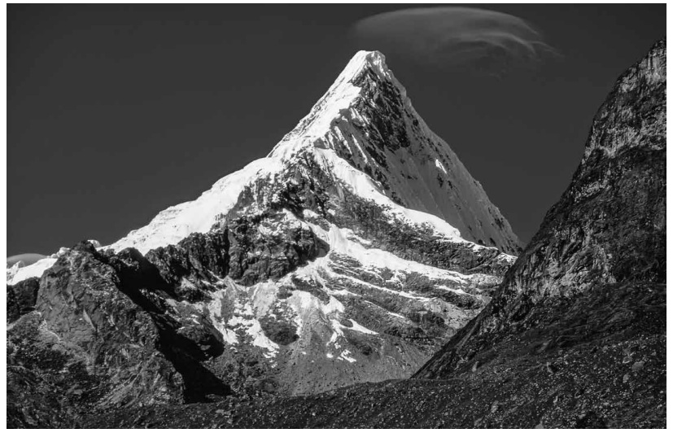

The greatest mountain range in the world's tropical zone, the Cordillera Blanca is one of the world's great hiking and climbing regions. No range in the world surpasses the Cordillera blanca in its combination of mountain scenery, easy access and mild climate. It welcomes the casual visitor as well as the hardened mountaineer. The trails wind through grassy and often forested valleys to rocky passes as high as 4900 meters. The routes themselves range from leasurely day hikes to overnight trips, to moderate four-or five-day loops, to demanding 100-km. circuits of multiple passes.
Ice in the Tropics
One of twenty glaciated ranges of the Peruvian Andes, the Cordillera Blanca is the greatest tropical mountain range in the world. Located in the department (state) Ancash in north-central Peru, it contains more than a third of the glacial ice in the world's tropical zone. The south summit of Huascaran(6756m) is the highest point in the tropics. Altough only one hundred-tewnty kilometers from the Pacific Coast, it forms the continental divide—the waters from its eastern slopes flow into tributaries of the Marañon River, a major tributary of the Amazon.
Geographic Extent
The Cordillera extends 180 kilometers NNW to SSE from 8*40; degrees to 10* south of the equator. It is only 28 kilometers across at its widest point, and is continuous with the exception of the remote Nevado (Mt.) Champará, located fifteen kilometers north of the rest of the range. Twenty to thirty summits surpass 6000 meters (depending how multi-peaked mountains are counted), and dozens more rise above 5700 meters. Due to the tropical latitudes the glaciers extend only as low as 4500 to 5000 meters, and the treeline is around 4500 meters.
One of the greatest hiking & climbing region in the world
This is one of the world's great hiking and climbing areas. No range in the world surpasses the Cordillera Blanca in its combination of mountain scenery, easy access and mild climate. It welcomes the casual wilderness visitor as well as the hardened mountaineer. The trails wind through grassy and often forested valleys to rocky passes as high as 4900 meters. The routes themselves range from leisurely day hikes, to overnight trips, to moderate four- or five-day loops, to demanding 100-km. circuits crossing multiple passes. Many also pass glacial lakes, waterfalls, fascinating flora and fauna (especially birds), pre-Inca archaeological sites, and/or come in extensive contact with rural villages. Perhaps 90% of visits to the range start on the western slope, above the fertile Santa River valley, known as the Callejón de Huaylas, but the more remote eastern side also has Huascarán Norte (6655m) and Sur (6756m) seen from the village of Copa Grande in the Callejón de Huaylas (Santa Valley), 2022. Huascarán is the highest mountain in the Peruvian Andes and the highest in the world's tropical zone. many beautiful, more isolated regions. Similarly, climbing routes range from walkups, to moderately technical, to routes to challenge the world's elite climbers. There are long rock as well as ice-and-snow routes.
Protected status
Virtually the entire range is protected (however imperfectly) as Huascarán National Park, created in 1975 through the untiring efforts of former US Peace Corps volunteers Curry Slaymaker and Michael Rourke. The park became the core of the Huascarán Biosphere Reserve in 1977, and was named a UNESCO World Heritage Site in 1985.
Booklet Contents
This booklet contains sixty-one photos covering virtually the entire range, taken primarily by Jim Bartle between 1978 and 2024, plus several aerial photos taken by the SAN (Serivicio Aerofotografico Nacional).
Some Exquisite pictures from the Cordillera Blanca:

Huascarán (6756 and 6655m), Chopicalqui (6354m), Hualcán (6122m) and Copa (6188m).

